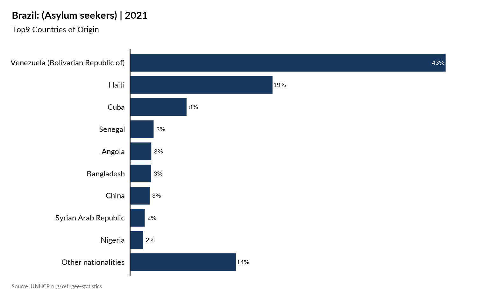
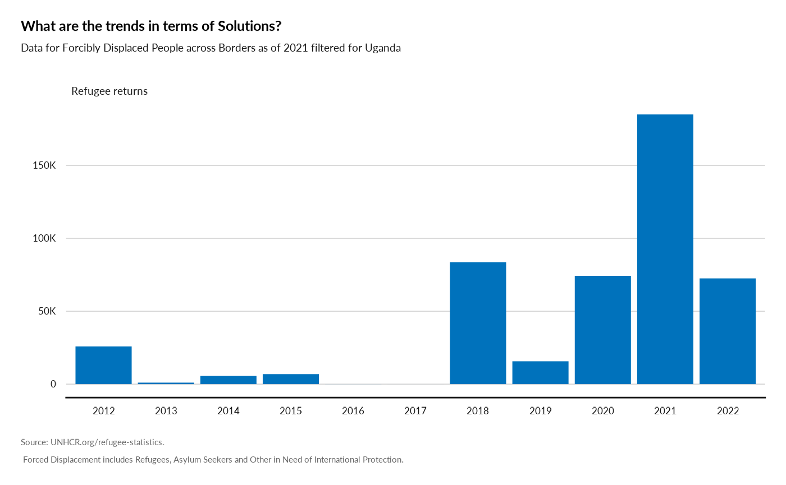
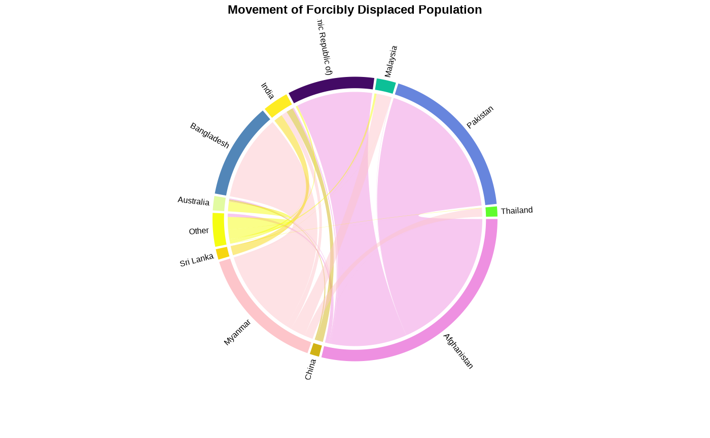
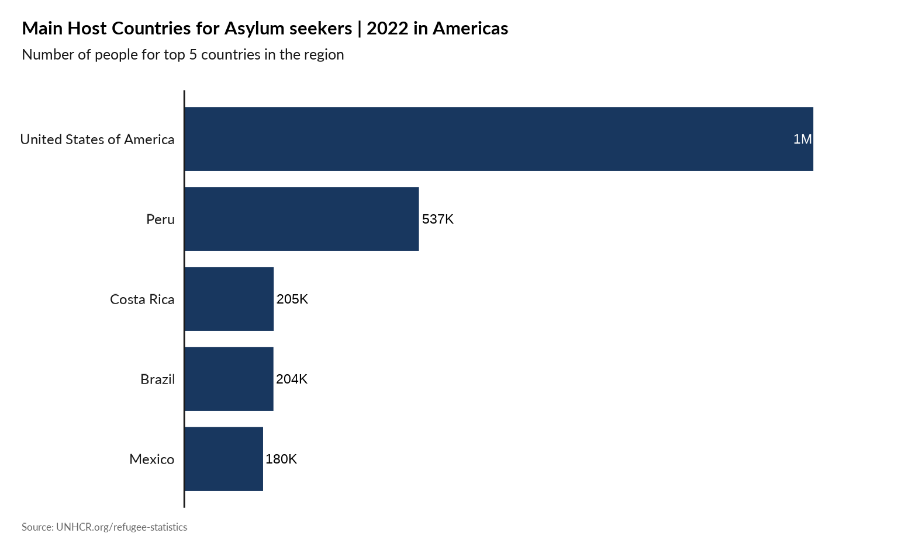
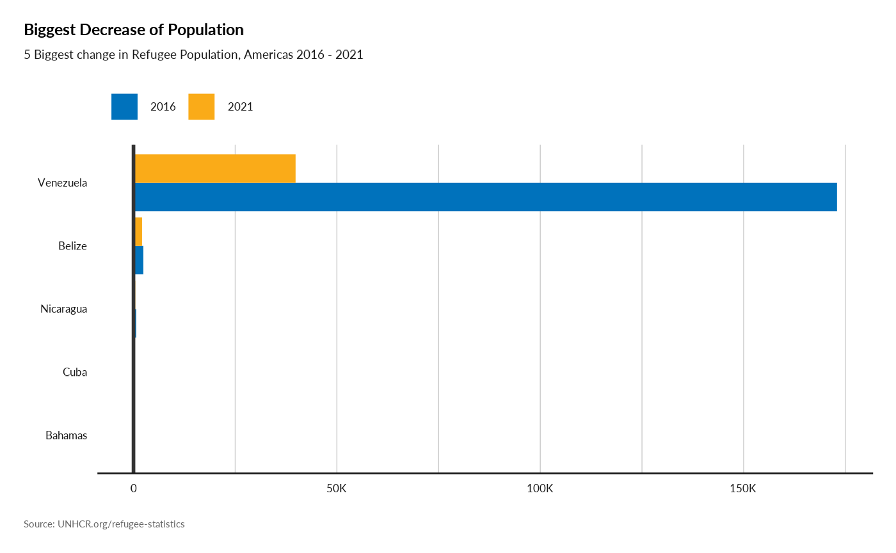
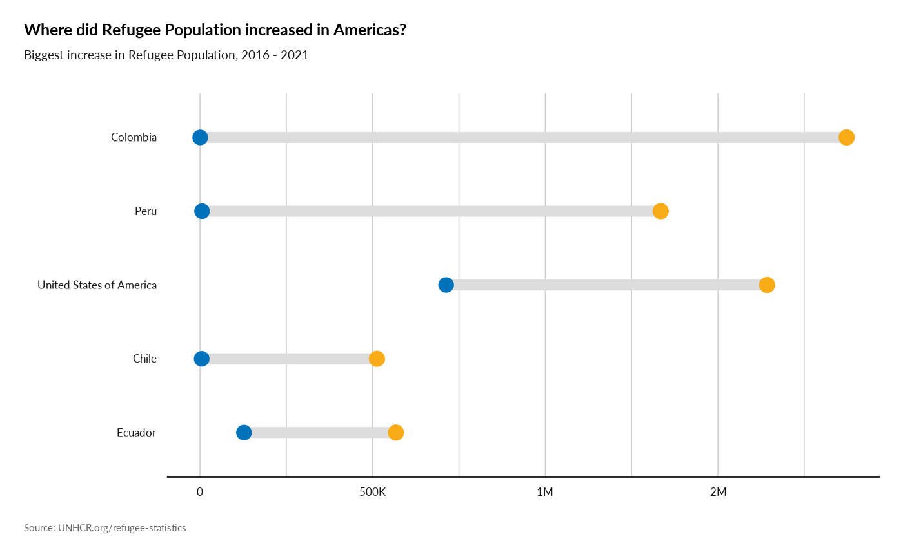

library(unhcrdatapackage)
#> Registered S3 methods overwritten by 'ggalt':
#> method from
#> grid.draw.absoluteGrob ggplot2
#> grobHeight.absoluteGrob ggplot2
#> grobWidth.absoluteGrob ggplot2
#> grobX.absoluteGrob ggplot2
#> grobY.absoluteGrob ggplot2
#> Warning: replacing previous import 'formattable::percent' by 'scales::percent'
#> when loading 'unhcrdatapackage'Country Questions
Plot Population type per year
plot_ctr_population_type_per_year(start_year = 2016,
country_asylum_iso3c = "PAN",
pop_type = c("REF",
"ASY",
"OIP",
"OOC",
"STA",
"IDP" )
)
#> Warning: The dot-dot notation (`..y..`) was deprecated in ggplot2 3.4.0.
#> ℹ Please use `after_stat(y)` instead.
#> ℹ The deprecated feature was likely used in the unhcrdatapackage package.
#> Please report the issue at
#> <
Plot Main country of origin in one specific country - Absolute value
plot_ctr_population_type_abs(year = 2020,
country_asylum_iso3c = "USA",
top_n_countries = 4,
pop_type = "REF"
) 
## Same with 9 top countries and asylum seekers included
plot_ctr_population_type_abs(year = 2020,
country_asylum_iso3c = "USA",
top_n_countries = 9,
pop_type = "REF"
) 
Plot Main country of origin in one specific country - Percentage
plot_ctr_population_type_perc(year = 2021,
country_asylum_iso3c = "BRA",
top_n_countries = 9,
pop_type = "REF" ) 
plot_ctr_population_type_perc(year = 2021,
country_asylum_iso3c = "BRA",
top_n_countries = 9,
pop_type = "ASY" ) 
Plot Increases and Decreases in Population Groups
#
plot_ctr_diff_in_pop_groups(year = 2021,
country_asylum_iso3c = "USA",
pop_type = c("REF", "ASY")
)
Plot Main Destination from one specific country
#
plot_ctr_destination(year = 2021,
country_origin_iso3c = "COL",
pop_type = c("REF", "ASY")
)
Plot Tree Map of Categories
#
plot_ctr_treemap(year = 2021,
country_asylum_iso3c = "USA",
pop_type = c("REF", "ASY")
)
Plot Refugees Age Pyramid
#
plot_ctr_pyramid(year = 2021,
country_asylum_iso3c = "VEN",
pop_type = c("REF", "ASY")
)
#> Warning: Removed 1 rows containing missing values (`geom_label()`).
Average Asylum Processing Time
# plot_ctr_processing_time(year = 2022,
# country_asylum_iso3c = "CHL")Solution
plot_ctr_solution(year = 2021,
country_asylum_iso3c= "UGA",
pop_type = c("REF", "ASY"))
#> Warning: `label_number_si()` was deprecated in scales 1.2.0.
#> ℹ Please use the `scale_cut` argument of `label_number()` instead.
#> ℹ The deprecated feature was likely used in the unhcrdatapackage package.
#> Please report the issue at
#> <
Plot Ratio Refugee Migrant
plot_ctr_disp_migrant(year = 2021,
country_asylum_iso3c = "BRA",
pop_type = c("REF", "ASY", "OIP") )
#> Warning: `spread_()` was deprecated in tidyr 1.2.0.
#> ℹ Please use `spread()` instead.
#> ℹ The deprecated feature was likely used in the wbstats package.
#> Please report the issue at <
#> Warning: Removed 6 rows containing missing values (`geom_point()`).
#> Warning: Removed 6 rows containing missing values (`geom_label_repel()`).Regional Questions

Plot Population Origin-Destination within the region
plot_reg_origin_dest(year = 2022, region = "Americas")
Plot Main country of Asylum in the Region
plot_reg_population_type_abs(year = 2022,
region = "Americas",
top_n_countries = 5,
pop_type = "REF"
)
plot_reg_population_type_abs(year = 2022,
region = "Americas",
top_n_countries = 5,
pop_type = "ASY"
) 
Plot Biggest decrease in Refugee Population
plot_reg_decrease(year = 2021,
lag = 5,
topn = 5,
region = "Americas",
pop_type = c("REF", "ASY", "OIP"))
Plot Biggest increase in Refugee Population
plot_reg_increase(year = 2021,
lag = 5,
topn = 5,
region = "Americas",
pop_type = c("REF", "ASY", "OIP"))
plot_reg_increase(year = 2021,
lag = 5,
topn = 5,
region = "Asia",
pop_type = c("REF", "ASY", "OIP"))
Proportion of the population who are refugees, by country of origin
plot_reg_prop_origin(year = 2022, region = "Americas")
Evolution over time
plot_reg_evolution(year = 2021,
lag = 5,
region = "Americas",
pop_type = c( "REF", "IDP", "ASY", "OOC", "STA", "OIP"))Persons of concern over time
plot_reg_solution(year = 2022,
region = "Americas",
lag = 10)
#> `geom_smooth()` using formula = 'y ~ x'
#> Warning in simpleLoess(y, x, w, span, degree = degree, parametric =
#> parametric, : span too small. fewer data values than degrees of freedom.
#> Warning in simpleLoess(y, x, w, span, degree = degree, parametric =
#> parametric, : pseudoinverse used at 2012
#> Warning in simpleLoess(y, x, w, span, degree = degree, parametric =
#> parametric, : neighborhood radius 1.05
#> Warning in simpleLoess(y, x, w, span, degree = degree, parametric =
#> parametric, : reciprocal condition number 0
#> Warning in simpleLoess(y, x, w, span, degree = degree, parametric =
#> parametric, : There are other near singularities as well. 1.1025
#> Warning in simpleLoess(y, x, w, span, degree = degree, parametric =
#> parametric, : span too small. fewer data values than degrees of freedom.
#> Warning in simpleLoess(y, x, w, span, degree = degree, parametric =
#> parametric, : pseudoinverse used at 2012
#> Warning in simpleLoess(y, x, w, span, degree = degree, parametric =
#> parametric, : neighborhood radius 1.05
#> Warning in simpleLoess(y, x, w, span, degree = degree, parametric =
#> parametric, : reciprocal condition number 0
#> Warning in simpleLoess(y, x, w, span, degree = degree, parametric =
#> parametric, : There are other near singularities as well. 1.1025
#> Warning in simpleLoess(y, x, w, span, degree = degree, parametric =
#> parametric, : span too small. fewer data values than degrees of freedom.
#> Warning in simpleLoess(y, x, w, span, degree = degree, parametric =
#> parametric, : pseudoinverse used at 2012
#> Warning in simpleLoess(y, x, w, span, degree = degree, parametric =
#> parametric, : neighborhood radius 1.045
#> Warning in simpleLoess(y, x, w, span, degree = degree, parametric =
#> parametric, : reciprocal condition number 0
#> Warning in simpleLoess(y, x, w, span, degree = degree, parametric =
#> parametric, : There are other near singularities as well. 1.092
Mapping Population
plot_reg_map( year = 2022,
region = "Americas",
topn = 5,
pop_type = c("REF", "ASY", "OIP"),
projection = "Mercator",
maxSymbolsize = .25)
#> Warning in CPL_crs_from_input(x): GDAL Message 1: +init=epsg:XXXX syntax is
#> deprecated. It might return a CRS with a non-EPSG compliant axis order.
# plot_reg_map( year = 2022,
# region = "WestAfrica",
# topn = 5,
# pop_type = c("REF", "ASY", "OIP"),
# projection = "Mercator",
# maxSymbolsize = .25)